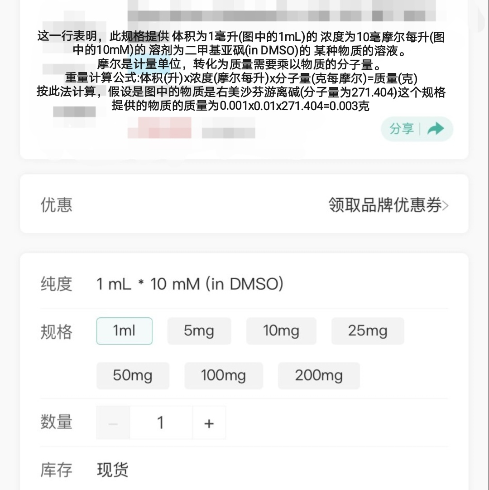

为什么试剂商要出售溶液形态的试剂?
有多种原因，大家最有可能接触到的是生命科学实验用试剂。比如图中的试剂，它的起效用量为微克级别，实验时现配需要特别精确的称量工具，否则会有误差，因此试剂商提供预配的溶液
之所以溶剂使用DMSO，因为很多有机物难溶于水，需要有机溶剂来溶解

有多种原因，大家最有可能接触到的是生命科学实验用试剂。比如图中的试剂，它的起效用量为微克级别，实验时现配需要特别精确的称量工具，否则会有误差，因此试剂商提供预配的溶液
之所以溶剂使用DMSO，因为很多有机物难溶于水，需要有机溶剂来溶解

有关化工网站上试剂的规格的一个提醒⚠️!
如图，化工网站上的某些试剂的规格是液体体积，而不是重量，纯度一行还附带一串读不懂的代码。除非这个试剂在常温下本来就是液体，否则必须留心，以免导致用量过大/过小，实验体中毒!
图中解释了这串代码的含义。有机溶剂通常有毒，因此买溶液试剂前请做好研究! https://t.co/eeKWbqZ5VO
如图，化工网站上的某些试剂的规格是液体体积，而不是重量，纯度一行还附带一串读不懂的代码。除非这个试剂在常温下本来就是液体，否则必须留心，以免导致用量过大/过小，实验体中毒!
图中解释了这串代码的含义。有机溶剂通常有毒，因此买溶液试剂前请做好研究! https://t.co/eeKWbqZ5VO